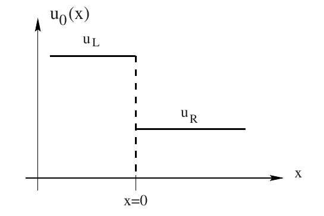
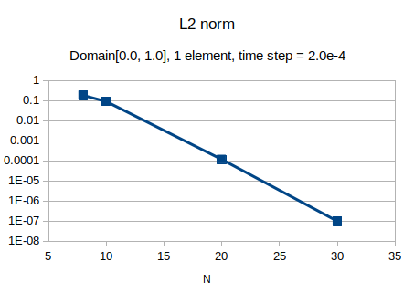
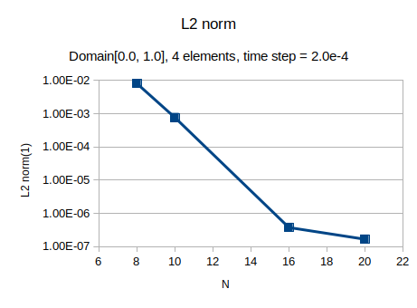
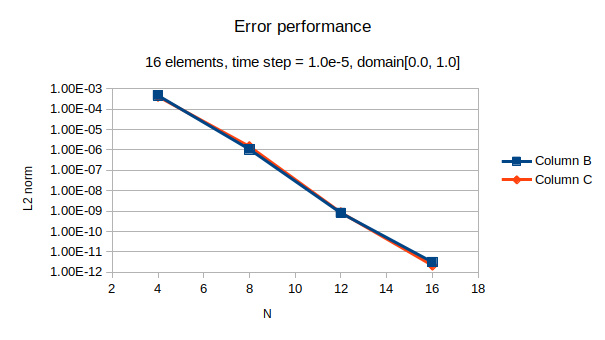
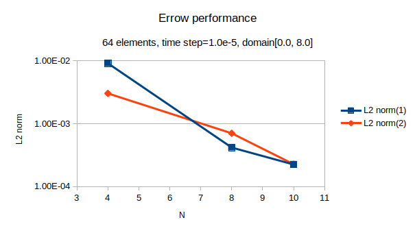

Spectral Approximation on a square¶
Approximation of Wave Propagation¶
Basic Model¶
The basic model is the linear wave equation with the form:
The wave equation is the fundamental equation of acoustics. It is based on two improtant approximation, namely, that the flow may be treated as inviscide and that convective derivatives are negligible in comparison to unsteady derivatives. (we neglect viscous and other diffusion effect(heat), when convection transfer is much faster than diffusion transfer of mass, momentum or energy.)
The variable \(p\) may represent acoustic pressure in an otherwise quiescent gas and \(c\) could be sound speed.
In order to solve the second order equation, we re-write the equation as a system of three first order equations.
Convert the wave equation to a system of first order equation, let:
\(u\) and \(v\) correspond to the components of the velocity in a fluid flow.
Assuming the order of mixed partial derivatives does not matter, then:
Combining with initial conditions,
We now obtain the system of equations by grouping the equation for pressure and two velocity components
or
Since \(A\) and \(B\) are constants, we can bring them inside the derivatives
This is known as Conservation law form since it can be written as
where the vector flux \(F = \mathbf{f}\widehat{x}+\mathbf{g}\widehat{y}\).
The term conservation law follows from the fact that the differential equation is what we get when we apply the divergence theorem to the integral conservation law.
Riemann Problem for Conservation Law¶
Introduction¶
A Riemann problem, named after Bernhard Riemann, is a specific initial value problem composed of a conservation equation together with piecewise constant initial data which has a single discontinuity in the domain of interest. The Riemann problem is very useful for the understanding of equations like Euler conservation equations because all properties, such as shocks and rarefaction waves, appear as characteristics in the solution. It also gives an exact solution to some complex nonlinear equations, such as the Euler equations.
Riemann Solver¶
Here we build a Riemann problem for the hyperbolic, constant coefficient system with proper initial condition.
The coefficient matrices \(A\) and \(B\) have \(m\) real eigenvalues \(\lambda_i\) and \(m\) linearly independent eigenvectors \(\mathbf{K}^{(i)}\), where \(m\) is the equation number Reference.
The Nodal Discontinuous Galerkin Approximation¶
We will implement the discontinuous Galerkin spectral element approximation of two-dimensional conservation law on a square domain.
The spectral element approximation starts with a weak form of (1). We multiply (1) by a test function, integrate and subdivide into elements
We map (2) onto reference space by affine map (3)
The solution and fluxes are approximated by polynomials of degree N and represent the polynomials in nodal, Lagrange form
where \(\mathbf{F}_{n,m}\widehat{x} + \mathbf{G}_{n,m}\widehat{y} = B\mathbf{Q}_{n,m}\widehat{x} + C\mathbf{Q}_{n,m}\widehat{y}\). We subsitute the approximations into the weak form of the PDE, and let \((\mathbf{Q}_t, \phi _{ij}) + (\bigtriangledown \cdot \mathbf{F}, \phi_{ij}) = 0.\)
If we apply Green’s identity to the second intergal
The Nurmerical flux¶
Time Integration¶
Change of Interval¶
Benchmark Solution: Plane wave Propagation¶
We represent a plane Gaussian wave through the grid.
The plane wave is defined as:
Where \(\mathbf{k}\) is the wavevector and it is normalized to satisfiey \(k_x^2 + k_y^2 = 1\). The wavevector is choosen as \(\mathbf{k} = (\sqrt{2}/2, \sqrt{2}/2)\) This is a wave with Gaussian shape where we compute the parameter \(d\) from the full width at half maximum, \(\omega = 0.2\), by math:d = omega/2sqrt{ln2}. The other parameters are \(c = 1\) and \(x_0 = y_0 = -0.8\).
Performance Evaluation¶
Exact boundary solutions are imposed on the 4 side of the computation domain. The initial condition is setting t=0.0 of the exact solution.
1 element¶
Domain: \(x \in [0.0, 1.0], y\in [0.0, 1.0]\).
Time step: \(\Delta t = 2.0\times 10^{-4}\)
Fig(1), shows the error performances.
4 element2¶
Domain: \(x \in [0.0, 1.0], y\in [0.0, 1.0]\).
Time step: \(\Delta t = 2.0\times 10^{-4}\)
Fig(2), shows the error performances.
16 elements¶
Domain: \(x \in [0.0, 1.0], y\in [0.0, 1.0]\).
Time step: \(\Delta t = 1.0\times 10^{-5}\)
Fig(3), shows the error performances.
64 elements¶
Domain: \(x \in [0.0, 8.0], y\in [0.0, 8.0]\).
Time step: \(\Delta t = 1.0\times 10^{-5}\)
Fig(3), shows the error performances.
